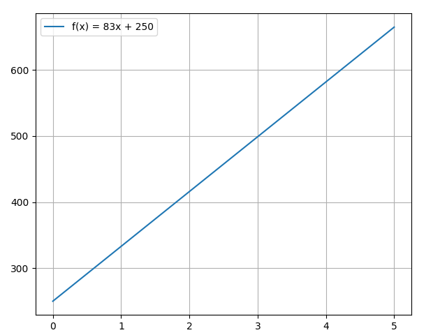

1.5 Calculus
Created Date: 2025-05-10
Just quickly familiarize yourself with the core concepts of calculus and recall the math classes you have taken. If you have not studied it, you need to read the recommended textbooks in detail.
1.4.1 Functions and Graphs
1.4.1.1 Linear Function
Linear functions have the form \(f(x) = ax + b\), where \(a\) and \(b\) are constants. The following figure plots \(f(x) = 83x + 250\):

Consider line \(L\) passing through points \((x_1, y_1)\) and \((x_2, y_2)\). Let \(\triangle{y} = y_2 - y_1\) and \(\triangle{x} = x_2 - x_1\) denote the changes in \(y\) and \(x\), respectively. The slope of the line is:
1.4.1.2 Polynomials
A linear function is a special type of a more general class of functions: polynomials. A polynomial function is any function that can be written in the form:
for some integer \(n \ge 0\) and constants \(a_n, a_{n-1}, \cdots, a_0\), where \(a_n \ne 0\).